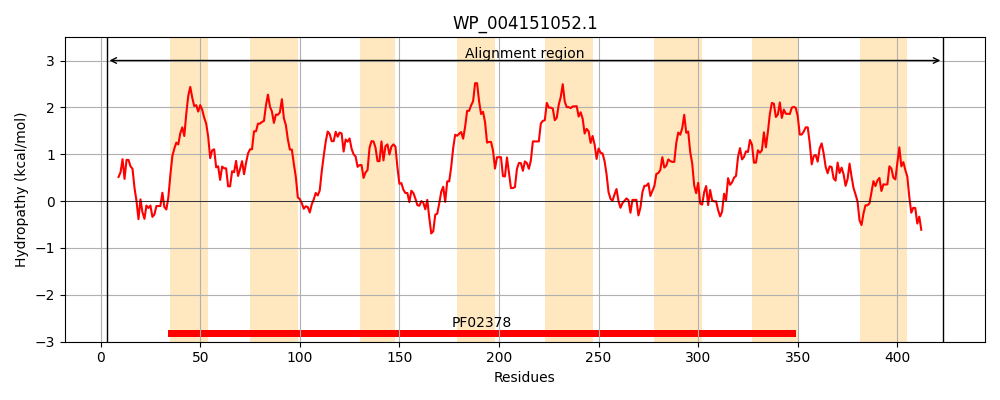
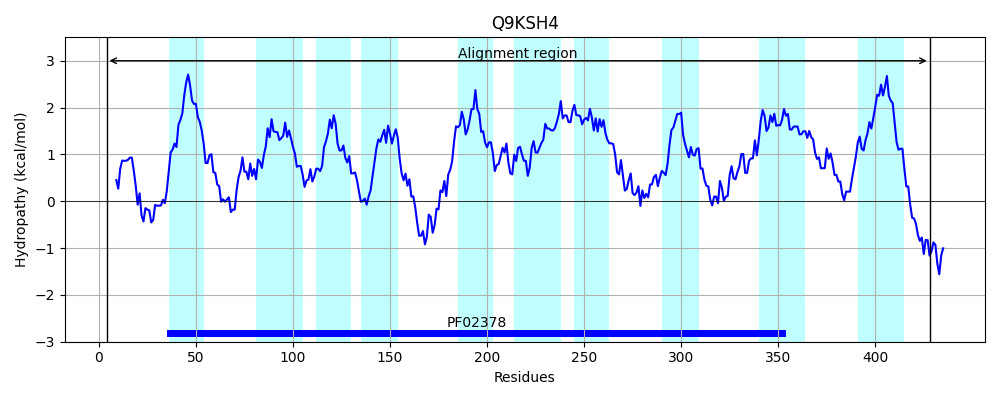
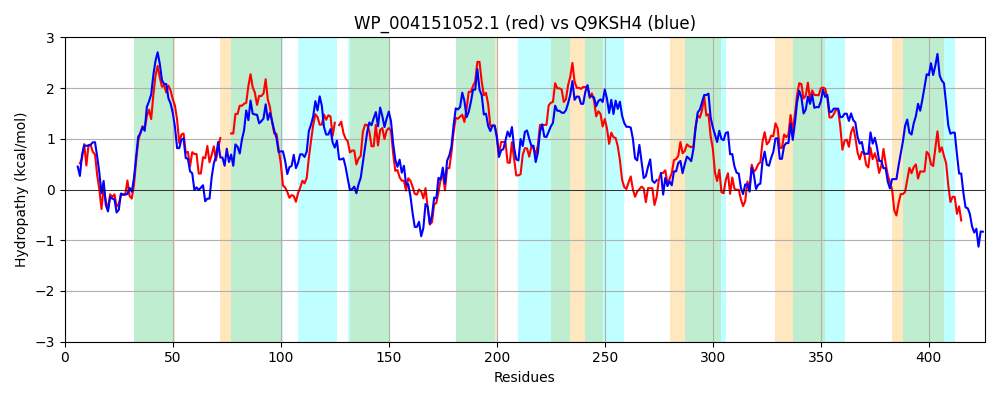

Hit Accession: Q9KSH4
Hit TCID: 4.A.3.2.6
Hit Description: gnl|BL_ORD_ID|18398 gnl|TC-DB|Q9KSH4|4.A.3.2.6 PTS system, cellobiose-specific IIC component OS=Vibrio cholerae GN=VC_1282 PE=4 SV=1
Mach Len: 426
e:0.000000
Query TMS Count : 8
Hit TMS Count: 10
TMS-Overlap Score: 6.500000
Predicted Substrates:None
BLAST Alignment:
Score: 854 , Bit scores: 333 bits, E-value: 3.9e-111, Alignment length: 426, Percentage identity: 37
Query: 3 IQLMNVAVDIIEQRLAPLANVLTRNNHITAMRDSFALAMPFVIVGSLLVPILFPPVSIDGASRFGQVYLLLRP----ILLPTFQLTIGLVALIVAFGASASLAKQYRLPERLCGLTGCLAFLLFIG-FRETAVSNVYLGGMGIFTALISSTYSIEIIRFFYKKGWCIRLPDEVPLMTRNGFQLLIPLLVVMLSISVMNAILLQTTGRIVPELISEAVRPLVLASDTLMAVLISLFICNLLWFIGIHGALIITGIMNPFWMTYLFENQQALAAGSPTLPHIYLQGFWDFYLLIGGIGSTLPLVLMAMRSRSRQLKSVAKIGLLPSLFNINEPILFGFPVIMNPVFLLPFLFVPLINACIAWYLTQLGILDRAVAMLPWSMPSPLGAAWSANGSWKNLCMSLFAMFNAWMLYRPFFKVYERQLAETER 423
++L + + I+E+ +AP+A + H+ AMRD F +AMPF+IVGS ++ FPP + D + FG+V+L I++ F +++G++ + V+ G + SLAK Y++ + ++FLL +E ++S ++GG GIFTA++ + +++E+ RF K IR+P++VP F++L+P+L + L++ ++ + G ++P+ + +PL+ AS+TL A++ +L +C LLWF GIHGA I+ G+++P ++T + N A G P +P+I+ Q FWDFY+ IGG G+TL LV++ SRS LKS+ ++ +P F INEP++FG PV+MNP+ LPF+F P+INA IA++ QLG + VA PW+ P+ +GA+W + ++ + + + + ++Y PFFK++E+Q+ E E+
Sbjct: 4 MKLYDAIIGIVEKHIAPIAAKVGNQPHVRAMRDGFIVAMPFIIVGSFILIFAFPPFAEDTTNVFGRVWLNFATTHFDIIMMPFNMSMGIMTIFVSLGVAYSLAKAYKMDGITSAVLSLMSFLLVAAPAKEDSLSMAHMGGTGIFTAVMCAFFAVELYRFMKKHNITIRMPEQVPPAIARSFEVLLPVLAIFLTLYPLSLFVQAEYGMLIPDAVMAMFKPLISASNTLPAIIGALLVCQLLWFAGIHGAAIVVGLLSPIFLTNISANIDAFVTGQP-VPNIFTQPFWDFYIFIGGSGATLALVILMSFSRSAHLKSIGRMSAVPGFFQINEPVIFGSPVVMNPILFLPFVFAPVINATIAYFAIQLGFVGMGVATTPWTTPAIIGASWGSGWTFTPVLLVVGLLILDLLIYLPFFKMFEKQVLEQEQ 428 | Protein Hydropathy Plots: |
|---|
|  |  |
Pairwise Alignment-Hydropathy Plot:
|
|---|
|  |